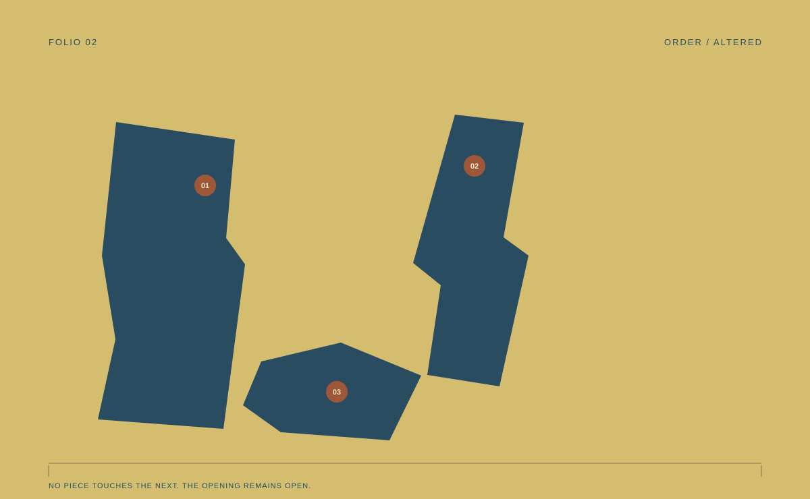

Vyt Aitken · The Keeper of Edges · Folio 02

Two edges still disagree.
No return completes the frame.
It stops before both sides.
An invented arrangement of cut shapes, not a plan or measurement of a real room. The passage is the space left between the fragments.